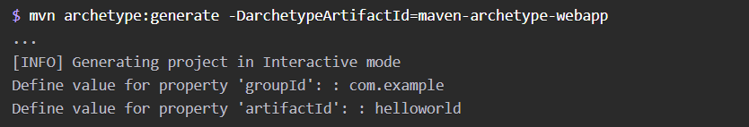
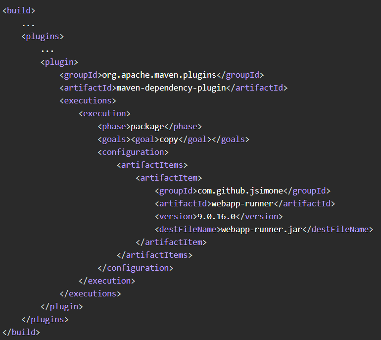
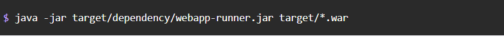
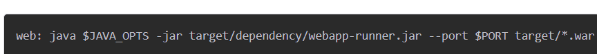
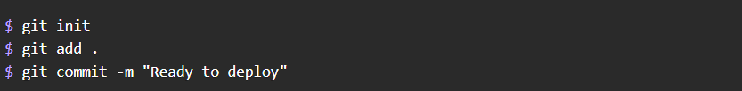
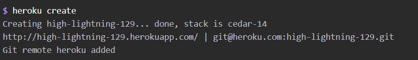
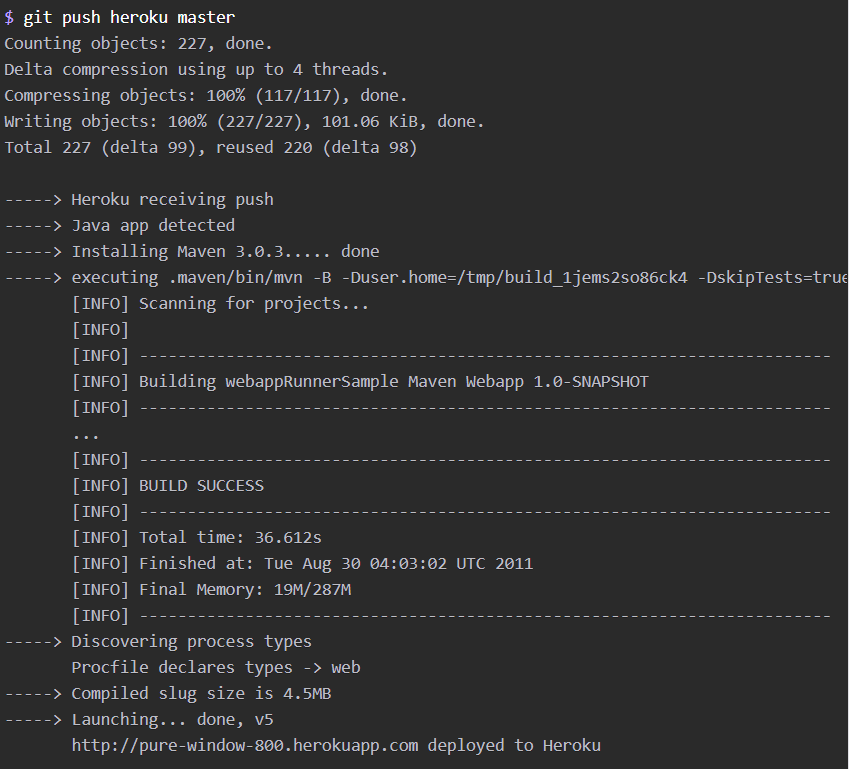

Prerrequisitos
1.-Tener instalado JVM y Maven
2.-Tner instalado una version de Git (recomendado Git Bash)
1.-Primero tenemos que crear una aplicacion si no tienes una con el siguiente comando
2.-Despues configuramos el maven para poder descargar el Webapp Runner con el siguiente codigo en el archivo pom.xml
3.-Ingresamos al al Simbolo de sistema y ingresamos el codigo: mvn package
El codigo mvn package nos sirve para construir la aplicacion.
4.-Despues ingresamos el codigo java -jar target/dependency/webapp-runner.jar target/*.war
Este codigo inicia la aplicacion en el puesto 8080
5.-Creamos una cuenta en Herocu
6.-Despues desplegaremos la aplicacion en Heroku
Primero creamos un Procfile
Declaramos como se desea que se ejecute la aplicacion Procfile en la raiz del proyecto
Creamos el archivo y intrucuciomos esta linea: web: java $JAVA_OPTS -jar target/dependency/webapp-runner.jar --port $PORT target/*.war
Despues abrimos el Git Bash y entramos a la direccion raiz del proyecto y despues ingresamos los comandos:
git init
git add
git commit -m "Ready to deploy"
Luego creamos la aplicacion con los comando: heroku create
A continuacion implementamos el codigo con el comando:
git push heroku master
Tu aplicacion ya deberia funcionar en Heroku